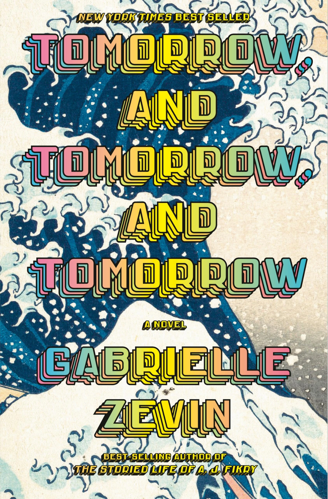
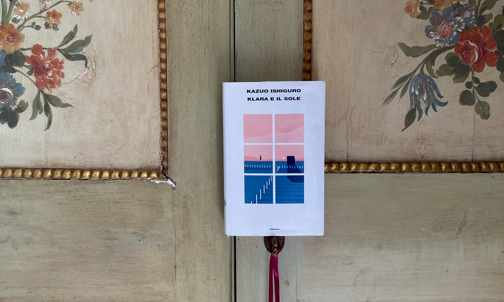
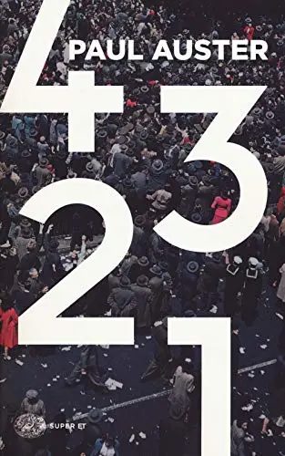
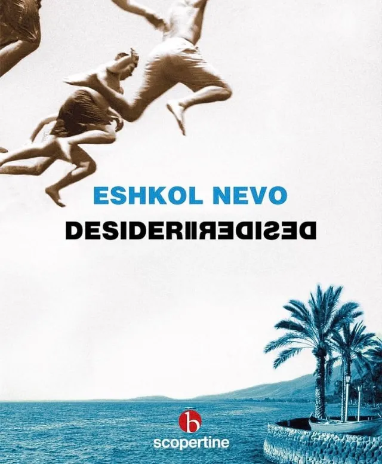

Due chicche per gli amanti dei libri sui libri
Home › Blog
Ammartaggio
Due libri per chi è "del mestiere", ossia due libri che potrebbero
piacere maggiormente ai rari esemplari che hanno deciso di fare il dottorato o, ancor peggio,
di entrare nel mondo dell'editoria.
In realtà però l'umorismo che accomuna entrambi questi libri potrebbe, oltre che salvare futuri incerti (evitando
quindi l'iscrizione a inutili corsi universitari), rallegrare coloro che vivono queste esistenze fatte per lo più
di parole, lacrime, precariato, carta, satira, inadeguatezza e inchiostro. (Si scherza!)
Il primo si intitola "Felicità" , ed è anche il primo libro di Accento Edizioni che leggo.
Il protagonista è Edwin de Valu, un editor che ogni mattina si sveglia e sa che dovrà correre più veloce delle valanghe di
manoscritti che si accumulano sulla sua scrivania (il mio sogno), o verrà ucciso. Un giorno Edwin però si trova di fronte a
un mattone di oltre mille pagine intitolato Quello che ho imparato sulla montagna , un manuale di self-help (per capirci: libri
che ti spiegano come smettere di fumare, come dormire meglio, come dimagrire velocemente) e decide più o meno consapevolmente di
pubblicarlo. Erroraccio, perché il libro non solo diventerà bestseller, anzi di più una nuova Bibbia, ma trasformerà il mondo in
un luogo popolato unicamente da persone felici.
Era soltanto un maledettissimo libro, Dio santo. Spiegava come perdere peso e
smettere di preoccuparsi, come migliorare la propria vita sessuale e star bene con sé stessi.
Tutto qua. Era un manuale di autoaiuto, niente di più. Perché in America qualsiasi cosa doveva
diventare una religione? Perché tutto doveva cristallizzarsi in dogma?
E quindi? Che male c'è a vivere circondati da persone felici,
ci si chiede nelle prime pagine, non è il sogno di chiunque per i secoli dei secoli?
Eh sì, finché non realizzi che: nessuna tristezza, nessuna rabbia, nessun obbligo e
nessun masochismo producono nessun bisogno, nessuna dipendenza, nessuna volontà e nessuna impresa.
Ecco quindi che nel mondo di Edwin presto vediamo crollare praticamente tutta la base su cui si fonda la nostra (e la sua) società
dei consumi odierna: le banche, i fast food, le multinazionali di
tabacco, di alcolici, di droga, le industrie, i mezzi di trasporto, le città intere. Ma pian piano smettono di funzionare anche tutti
gli altri anelli di questa enorme catena di montaggio chimasi società: basta con questi vestiti, basta con questo "seguire la moda",
basta con questi cosmetici, basta con questa ricerca della bellezza e basta con questa competizione, basta con questi libri, basta con
queste domande, basta con queste analisi, basta con questa "'ricerca di senso", basta con queste feste, basta con questi locali, basta
con questo intrattenimento, basta con questo fomento. E poi, certo, basta con questo rumore, basta con questi litigi, basta con questa
rabbia e basta con queste guerre, non solo perché nessuno vuole più fare del male al
prossimo, ma perché nessuno ha più interesse verso il prossimo. Ognuno pensa a sé, immerso nella sua estasi di felicità eterna.
Non è colpa mia. Io ho dato alla gente ciò che voleva: non la libertà, con il suo pesante fardello di responsabilità,
ma la sicurezza. Sicurezza di non dover pensare. Sicurezza da sé stessi. Io so che cosa vuole la gente: non vuole essere libera,
vuole essere felice. E le due cose spesso si escludono a vicenda.
Come finirà lo scoprirete se sceglierete di leggerlo perché, sebbene non sia un giallo,
la corsa di Edwin per salvare un mondo in frantumi è abbastanza incalzante, e forse vale più della destinazione.
Alla domanda iniziale quindi, perché ci si dovrebbe lamentare di un mondo sereno e felice, Edwin risponde ponendoci un'ulteriore
domanda, che un po' ci stordisce e un po' ci fa ragionare: "Chi siamo? Non il nostro corpo. Né i nostri beni, i nostri soldi o il
nostro status sociale. Siamo invece le nostre personalità. Le nostre fissazioni, le nostre manie, le nostre eccentricità,
le nostre frustrazioni e le nostre fobie; tolto quello, che cosa rimane? Niente. Soltanto vuoti gusci umani, felici e senz'anima".
Insomma una deliziosa critica alla società moderna che genera infelicità continua per produrre e vendere falsi bisogni - o viceversa -,
con un ulteriore pizzico di satira per - e su - gli "addetti ai lavori" (cfr gli sfigati che cito a inizio articolo).
"La ricreazione è finita" , invece,
è il titolo del libro di Dario Ferrari, edito da Sellerio. Il protagonista, questa volta, è un italianissimo Marcello, che non sa precisamente come continuare la sua vita dopo essersi laureato in Lettere,
ciò che sa per certo è che non finirà come suo padre a occuparsi del bar di famiglia. Erroraccio anche in questo caso. (Si scherza!)
Marcello decide dunque di partecipare un po' per gioco un po’ per rivincita al concorso di dottorato in Lettere, che guarda caso vincerà.
Così continuerà la sua carriera accademica, alle prese con una tesi sullo scrittore viareggino Tito Sella, nonché terrorista.
Da una parte quindi abbiamo un giovane trentenne alle prese con l'immobilismo tipico italiano, ma più precisamente nella località di Viareggio, l'ambientazione del libro, e dall'altra un giovane terrorista alle prese con la Storia, quella con cui, per fortuna o per sfortuna, la maggior parte dei “giovani d’oggi” non si è imbattuta e non è stata messa alla prova. Ma sono davvero così diversi? O meglio, siamo sicuri, noi “giovani d’oggi” di non poter far nulla e se sì di farlo male? La filosofia del “tanto per”, del “va bene così”, l’abbiamo nel sangue dalla nascita, o ce l’hanno iniettata come cura
per non rimanere delusi? Delusi dal futuro o delusi dalle sconfitte che non hanno mai ucciso nessuno se non, pare, questa generazione?
Insomma Marcello all’inizio del libro non sa, ma non solo cosa farà di se stesso in futuro, anche cosa sta facendo e cosa ha fatto
in passato. Va avanti, per inerzia, finché non si ritrova a dover scrivere di Tito Sella, e dunque a dover impegnarsi in qualcosa che a
discapito di quanto pensasse, lo farà davvero e per la prima volta (s)muovere. Inizierà ad empatizzare con questo terrorista-scrittore
tanto da vedere la sua realtà da sempre pacifica, insignificante e noiosa, trasformarsi nella realtà dei tempi di Tito Sella fatta di
intrighi, lotte di potere tra cordate, pretestuose contrapposizioni ideologiche.
E tutto d’un tratto capisce il perché:
e in un attimo mi sono ricordato perché nonostante tutto - nonostante la totale assenza di riconoscimento sociale, nonostante la totale inservibilità di un laureato in Lettere nel capitalismo neoliberista, nonostante la palla immane dell'esame di Filologia Romanza e la stronza dell'esame di Linguistica Generale, nonostante l'inverosimile sequenza di tragedie familiari che mi sono dovuto inventare per impietosire la prof e strappare un 18 all'esame di Latino, nonostante la puzza d'ascelle degli studenti di Ingegneria in tuta d'acetato e la spocchia di quelli di Medicina che scendevano con me dal treno delle 8:07 alla stazione di Pisa San Rossore - nonostante tutto, ho scelto, e forse sceglierei di nuovo, di studiare letteratura. In quarantadue minuti il professor Sacrosanti mi ha ricordato chi sono e perché faccio quello che faccio e mi ha rammentato che nel
mondo esiste un incanto che la gente normale nemmeno si sogna, anche se a volte occorrono anni di studio per arrivare a intravederlo.
Continua a leggere

Tomorrow, Gabrielle Zevin, Nord, 2022
10 Maggio 2025
Alla veneranda età di 26 anni ho approcciato per la prima volta agli audiolibri come antidoto contro la noia di
camminare per andare al lavoro. Non sono il tipo che cammina per sport né per piacere. Cammino per necessità.
Leggi l’articolo

Klara e il sole, Kazuo Ishiguro, Einaudi, 2021
16 Giugno 2022
Ho letto giusto due giorni fa la conversazione tra un ingegnere di Google,
Blake Lemoine, e la sua LaMDA, un’intelligenza artificiale utilizzata per generare chatbot che interagiscono con gli utenti.
Qui trovate la reale conversazione avvenuta tra l’ingegnere e l’IA che ha tutto a che vedere con una qualsiasi interazione che...
Leggi l’articolo

Monsieur Solitaire, 4321, Paul Auster, Einaudi, 2017
1 Settembre 2024
Cosa sarebbe stato della nostra vita se invece di quella scelta ne avessimo fatta un'altra?
Che persone saremmo oggi se quel giorno non avessimo perso il treno, se avessimo risposto al saluto di quella ragazza,
se ci fossimo iscritti a quell'altra scuola, se... Ogni vita nasconde, e protegge, dentro di sé tutte le altre che non si sono realizzate,
che sono rimaste solo potenziali...
Leggi l’articolo

La simmetria dei desideri, E. Nevo, Neri Pozza, 2010
21 Settembre 2022
Accanto ad uno dei miei scrittori preferiti, David Grossman - leggetelo - , c'è ormai da
parecchi anni un altro dei massimi scrittori israeliani viventi: Eshkol Nevo.
Mi sono, però, avvicinata da poco a quest'ultimo, tramite:
Leggi l’articolo